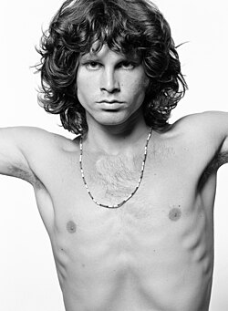
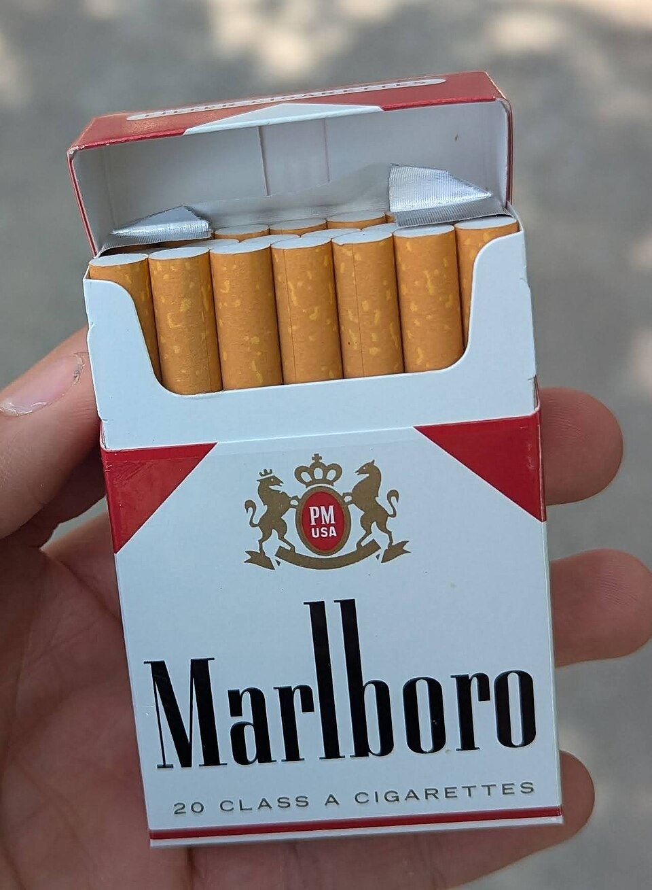
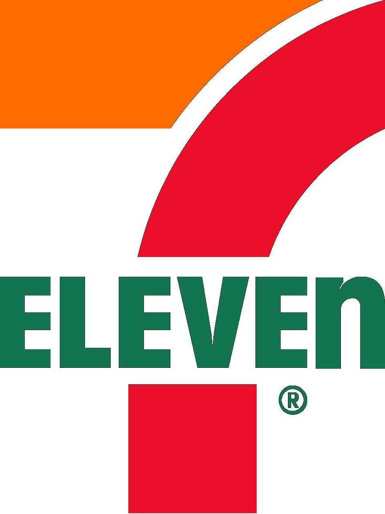

Status Faction

Exhibitions
Skin Deep: Post-Instinctual Afterthoughts on Psychological Portraiture, Lazarides Rathbone, London, United Kingdom, June 24–July 21, 2011.
They Would Be Kings: An Exhibition Curated by Steve Lazarides, Sotheby’s Hong Kong Gallery (S|2), Hong Kong, China, March 17–26, 2016.
Literature
Ron English, Death and the Eternal Forever (Korero Press, 2014), p. 113. ISBN 978-0957664920.
Ron English, Original Grin: The Art of Ron English (Paris: Cernunnos, 2019), p. 310. ISBN 978-2374950938.
Cultural & Artistic References


